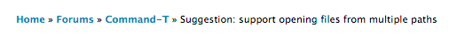

Escaping is on by default
Appending: overview
> safe = '<em>foo</em>'.html_safe
=> "<em>foo</em>"
> unsafe = '<strong>bar</strong>'
=> "<strong>bar</strong>"
> (safe + unsafe)
=> "<em>foo</em><strong>bar</strong>"
> (safe + unsafe).html_safe?
=> true
> (unsafe + safe)
=> "<strong>bar</strong><em>foo</em>"
> (unsafe + safe).html_safe?
=> false
A real-world example
def breadcrumbs *crumbs
content_tag :div, :id => 'breadcrumbs' do
[link_to('Home', root_path), *crumbs].map do |crumb|
crumb.html_safe? ? crumb : h(crumb)
end.join(' » ').html_safe
end
end

Observations
- Rails'
content_tag returns an HTML-safe string
link_to returns an HTML-safe string
- Individual "crumbs" may safe or unsafe; note how even in Rails 3
there are still occasions where it's necessary to use
h
- Joining safe strings makes them unsafe
- HTML-entities will get escaped unless they're in safe strings
- Helpers we write should return HTML-safe strings